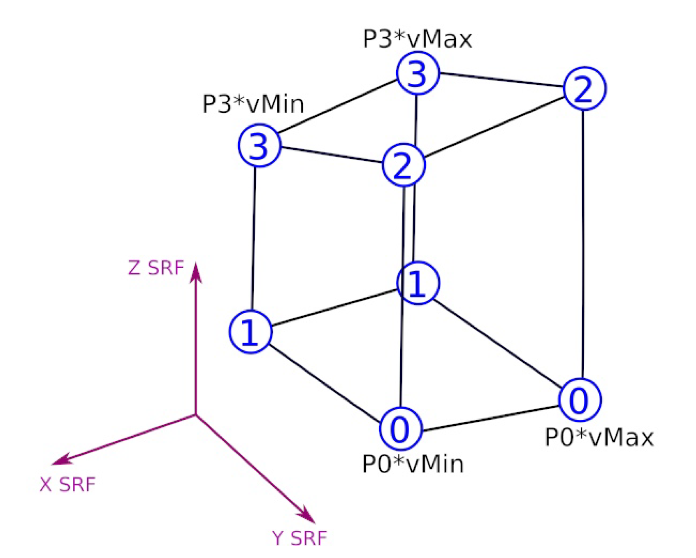
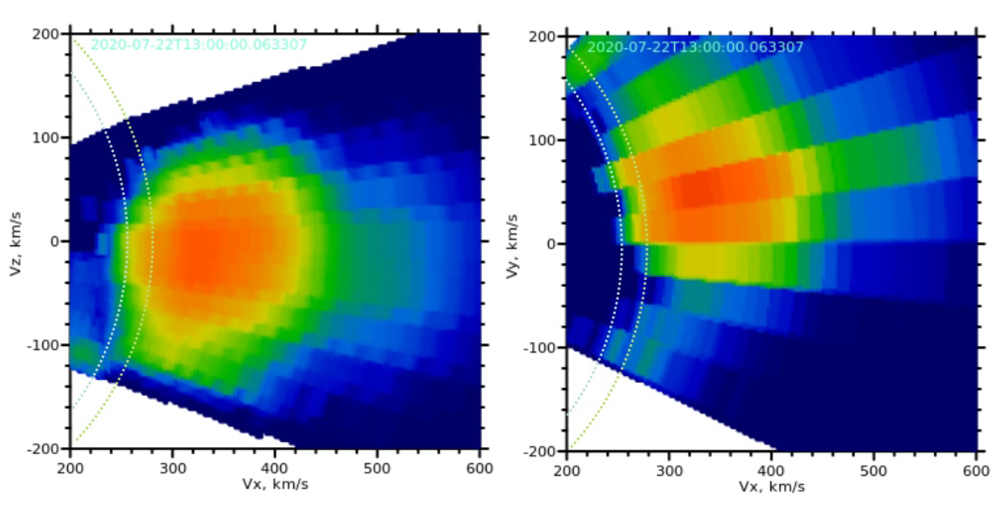

Special notes about PAS VDF interpretation
PAS VDF data product are described in Section 5.1. Each corresponding CDF file (see Table 1) contains four supporting variables:
- Full Elevation [ 11, 9, 3] = [Azimuthal bins, Elevation bins, [elArrMin,Center,elArrMax]]
- Full Azimuth [ 11, 9, 3] = [Azimuthal bins, Elevation bins, [azArrMin,Center,azArrMaxMax]]
- Elevation_correction [96] = [Energy bins]
- Energy [96] = [Energy bins]
- delta_p_Energy[96] = [Energy bins]
- delta_m_Energy[96] = [Energy bins]
These four tables define position of of each bin as follows
-
ie : bin energy index [0 - 95]
-
iel : bin elevation index [0 - 8]
-
iaz : bin azimuth index [0 - 10]
All angles are in rads
-
se = start_energy index
-
sel = start_elevation index
-
E2V = 13.85
Given above information, we can find the limit of sampling velocity
vMin[ie] = E2V * sqrt(Energy[ie]-delta_m_Energy) #[km/s]
vMax[ie] = E2V * sqrt(Energy[ie]+delta_p_Energy) #[km/s]
The coordinates of each bin can be found as
x0 = -cos(elArrMin[iaz,iel])*cos(azArrMin[iaz,iel])
x1 = -cos(elArrMin[iaz,iel])*cos(azArrMax[iaz,iel])
x2 = -cos(elArrMax[iaz,iel])*cos(azArrMin[iaz,iel])
x3 = -cos(elArrMax[iaz,iel])*cos(azArrMax[iaz,iel])
y0 = cos(elArrMin[iaz,iel])*sin(azArrMin[iaz,iel])
y1 = cos(elArrMin[iaz,iel])*sin(azArrMax[iaz,iel])
y2 = cos(elArrMax[iaz,iel])*sin(azArrMin[iaz,iel])
y3 = cos(elArrMax[iaz,iel])*sin(azArrMax[iaz,iel])
z0 = -sin(elArrMin[iaz,iel])
z1 = -sin(elArrMin[iaz,iel])
z2 = -sin(elArrMax[iaz,iel])
z3 = -sin(elArrMax[iaz,iel])
if(((ie - se) % 2) == 0) z0,z1,z2,z3 += Elevation_correction[ie]
else z0,z1,z2,z3 -= Elevation_correction[ie]
The position of each grid is then
Pi = [Xi,Yi,Zi]
where i = 0, 1, 2, 3.
Now the cell points coordinates are defined according to Figure 5.
 Figure 5 Definition of one bin in the velocity space in SRF frame
Figure 6 show the results of the integration of one hour averaged VDF along Vy and Vz. The Elevation correction gives the saw-like boundaries between bins in Vx-Vz plane. Also, in the plane Vx-Vy you can see that the VDFs value are perturbed for the velocities below 280 km/s.
 Figure 6: One hour averaged VDF projected into Vx-Vy[SRF] and Vx-Vz[SRF] panes. For convenience the Sun is on the left and the Vx is positive.